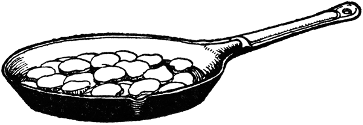

Axí es una planta muy conocida y usada en todas las partes destas Indias, Islas y Tierra Firme, e provechosa e necesaria, porque es caliente e da muy buen gusto e apetito con los otros manjares.
Gonzalo Fernández de Oviedo,
Historia General y Natural de las Indias, 1526.
1 tallo de cebolla larga picada
1 tomate mediano picado
1 taza de caldo de pollo o costilla de respetando
¼ de taza de vinagre
2 cucharadas soperas de cilantro picado
Sal y pimienta negra (opcional) al gusto
Se lava el ají y se le quitan las semillas y las venas. También puede machacarse. Se pican finamente la cebolla y el tomate, se le añade sal, pimienta, cilantro picado y el vinagre. El ají se sumerge en el caldo caliente, para luego revolverlo con los otros ingredientes. Se deja reposar y se sirve en tazas pequeñas para acompañar piquetes, empanadas, yuca, papas y carnes asadas.
2 aguacates pelados y picados
½ taza de ají de yerbas
1 cucharada de jugo de limón
2 huevos duros picados (opcionales)
Se mezcla todo con una cuchara de palo y se sirve. Es preferible prepararse en la medida perfecta para que no se ponga negro. Debe guardarse en nevera y sin aire, para que no se oxide.
4 huevos duros picados
1 cucharada de cilantro y perejil finamente picados
2 ajíes piques
2 cucharadas de vinagre
½ cucharadita de jugo de limón
Sal y pimienta al gusto
Se remojan los ajíes en vinagre y limón durante una hora. Se incorporan luego al vinagre con las hierbas, la sal y la pimienta. Se bañan los huevos con esta mezcla y se revuelve bien. Se sirve para acompañar sopas, carnes y ensaladas.
La guatila, los ajíes, fríjoles, frutas, tallos y cogollos de palmas, así como los diversos tubérculos de la zona andina (papas, hibias, cubios y chuguas) hacían parte de la dieta original precolombina. El cocido de habas y guatila es una perfecta muestra de mestizaje culinario.
[Para 4 personas]
2 tajadas de tocino cortado en pedazos medianos
1 guatila o “papa de pobre” pelada y cortada en trozos medianos
1 taza de habas cocinadas
3 cucharadas de pimentón rojo cortado en cuadritos
½ taza de caldo de pollo
1 cucharada de cilantro finamente picado
Sal y pimienta al gusto
Se pone a freír la tocineta a fuego alto durante tres minutos. Se le agrega la guatila, las habas, el pimentón, y se saltean por dos minutos. Se añade el caldo y se continúa la cocción hasta que la guatila se cocine. Se añade el cilantro, la sal y la pimienta, y se sirve.
Debe reconocerse, en justicia, que los chicharroneros han sido en todo tiempo altivos de carácter é invariables en sus creencias y opiniones; nadie como ellos ha luchado por el triunfo de su causa y por la gloria de su bandera, hasta el punto de soportar con abnegación las rudas faénas y penalidades del guerrillero; pues apenas estalla la guerra civil, nuestro chicharronero abandona su hogar y su cuchillo, se abre paso por entre los puercos, y va á servirle á su partido.
Francisco de Paula Carrasquilla.
“El chicharronero”, Tipos de Bogotá,
Imprenta de Fernando Pontón, 1886.
Se toma el tocino y se le deja el pellejo limpio, sin grasa y sin cerdas. Se deja secar al sol por 5 días. Se corta en porciones, se sofríen, se dejan enfriar y se salan. Luego se refríen en manteca hirviendo hasta que «totié» y tueste.
El Taque es una adaptación criolla del antipasto o encurtido europeo. Se usa para acompañar piquetes, asados o fritanga, o para acompañar carnes o aves.
1 taza de arveja verde
1 taza de habichuela picada
1 taza de cebollitas pequeñas ocañeras
1 taza de pimentón verde o rojo picado
1 taza de zanahoria picada
1 pepino cohombro mediano
1 taza de coliflor picado
1 taza de guatila picada (papa de pobre)
1 taza de «diablos» (flor de fique muy tierna)
1 taza de botones de flor de cámbulo
2 cucharadas de sal, preferiblemente sal marina
½ taza de vinagre blanco o de especies
Eneldo, laurel, tomillo, perejil crespo y liso, y cilantro
1 cucharada de azúcar
Se limpia la verdura y se pica en pedazos pequeños. Se ponen en una olla cuatro tazas de agua con una cucharada de sal, y cuando «rompa» el hervor se le añaden las verduras, teniendo en cuenta la textura, dureza y tiempo de cocción para cada una. Se deja hervir por lo menos 10 minutos. De último se le añaden los «diablos» y la flor de cámbulo, dejándolas hervir un poco. Al bajar del fuego se le agrega el vinagre blanco o de especies y el azúcar. Se le ponen también las hierbas y se deja hervir cinco minutos.
Se guarda en frascos llenos hasta el cuello. Se pueden precalentar los frascos en una olla y dejarlos hervir para cerrarlos herméticamente. Este «taque» se sirve para acompañar el «piquete» o el «asado». Esta receta es típica de los departamentos de Santander del Norte, del Sur, y de algunas regiones del departamento de Cundinamarca.
2 remolachas
1 cucharada de aceite de oliva
4 huevos duros picados
2 zanahorias
1 cebolla cabezona finamente picada
2 cucharaditas de cilantro bien picado
2 cucharadas de jugo de limón
Vinagre
Hojas de menta picadas (opcional)
Perejil, pimienta y sal al gusto
Se cocina en agua la remolacha hasta que se desprenda la cáscara. Debe tenerse cuidado de no dejarla cruda, pues es amarga. Se pica en cuadros y se mezcla con la zanahoria (cocinada o cruda) rallada o picada en cuadritos. Se revuelve con la cebolla, el cilantro, el aceite de oliva, el jugo de limón y un poco de vinagre. Puede servirse con un poco de ajonjolí espolvoreado y hojas de menta picadas por encima.
El hogar de la longaniza en Colombia es el pueblo de Sutamarchán, Boyacá, ubicado al nororiente de Bogotá y a tres horas de camino, aproximadamente.
[Para 6 a 8 personas]
1 libra de carne de cerdo con poca grasa
6 tallos de cebolla larga picados
2 cucharadas de perejil picado
3 cucharadas de jugo de naranja agria
Tripa de cerdo delgada y remojada
Sal y comino al gusto
Se pica la carne y se adoba muy bien con la cebolla, el perejil, el comino y sal. Se baña con el jugo de naranja agria, se deja reposar y se embute en la tripa. Se amarra y se cuelga, procurando que le dé el aire. Se fríe o se asa para servir.
Arroz cocido
2 litros de sangre de cerdo fresca
Arveja verde cocida
Tripa de cerdo
Ajos
Cebolla
Poleo picado (opcional)
Pimienta, comino y sal al gusto
A la sangre fresca se le añade sal y un poco de vinagre para evitar que se coagule. Se le agrega el resto de los ingredientes y se revuelve bien. Se embute esta mezcla en las tripas y se amarran las puntas, dejándolas un poco flojas. Se pone a cocinar, teniendo cuidado de que no desaten.
1 pescuezo de gallina criolla o de gallo
1 taza de sangre del animal
2 gajos de cebolla larga
1 tomate grande
Ajo sal y pimienta
2 papas peladas y partidas en cuadritos
Aceite para guiso
Laurel, tomillo, orégano y poleo
Ajo y perejil (opcionales)
1 taza de arroz blanco cocinado
1 taza de arvejas verdes
Otro ramito de poleo
Al matar la gallina o el gallo, tener cuidado de no romper la piel del pescuezo y cortarlo lo más largo posible. Dejar desangrar el animal de tal manera que la sangre quede en la cabeza y en el pescuezo, es decir, colgándolo boca abajo amarrado de las patas con una cabuya. Se guarda la sangre que escurre de la cabeza y del pescuezo en una taza aparte. Se le quita el hueso del pescuezo con mucho cuidado de no romper la piel y se le quita el pico. Se lava la piel por fuera con agua y limón, de tal manera que no quede con plumas ni cañones.
Al arroz se le añade un guiso con aceite, ajo, cebolla larga picada, tomate picado, sal, pimienta, tomillo, laurel, orégano y poleo y se deja sofreír. Se baja del fuego y se le agregan las papas, las arvejas y la sangre, revolviendo muy bien. Se le agrega otro ramo de poleo sólo con las hojas, sin los palitos. Luego se procede a colocar poco a poco el relleno entre el pescuezo con una cucharita, de tal manera que el relleno llegue hasta el fondo, apretando bien; no se debe apretar mucho porque si queda muy relleno se revienta al cocinarlo. Se rellena hasta arriba y se cose con puntadas en cadeneta. Se remata bien.
Se llena una olla grande con cuatro tazas de agua, apio, cebolla y un gajo de cebolla larga; se pone a hervir y cuando suelte el hervor se coloca allí el pescuezo a hervir por lo menos 35 minutos. Se baja del fuego. Para servirlo se puede pasar a la mesa frío o calentándolo en el horno o en una sartén con un poquito de aceite para que se fría un poco la piel. Se acostumbra a servirlo al desayuno con chocolate en leche y arepas.
…están asidas ellas so la tierra,
del tamaño de un huevo más o menos,
unas redondas y otras perlongadas:
son blancas y moradas y amarillas;
harinosas raíces de buen gusto;
regalo de los indios bien acepto,
y aún de los españoles golosina.
Juan de Castellanos.
Elegías de varones ilustres de Indias, 1589.
3 libras de papa sabanera o parda pastusa
3 tallos de cebolla larga picados
1 tomate grande picado
Sal, pimienta, ajo, cebolla
1 cucharada sopera de mantequilla
½ taza de queso Paipa (amarillo y cremoso) rallado
1 cucharada de harina de trigo
½ taza de leche
Se lavan y se pelan las papas «chalequeadas», esto es, que no se pelan todas sino que se les deja algo de cáscara. Se dejan cocidas.
Aparte se prepara un guiso con la cebolla larga picada a lo largo, el tomate picado y los aliños. Se deja sofreír a fuego suave. Se desata la harina en la leche y se le agrega el queso rallado. Si se tiene disponible natas de leche se le puede agregar media taza de ellas. Esta mezcla se le agrega al guiso que se deja espesar y dar punto. Se vierte esta salsa sobre las papas. Se sirven para acompañar la sobrebarriga al horno.
[Para 4 personas]
6 papas peladas y cortadas en 8 porciones
1 cucharada de aceite vegetal
1 cucharadita de achiote o color
1 tallo de cebolla larga picado
1 diente de ajo machacado
1 tomate chonto mediano pelado, sin semillas y picado
1 taza de leche
Sal, pimienta y comino al gusto
En una sartén con aceite y color se saltea la cebolla, el ajo y el tomate. Se vierte la leche, la sal, las especies y se revuelve. Se incorporan las papas y se cocinan lentamente, sin dejar que se desaten.
Se sirve como principio o para acompañar platos fuertes.
[Para 4 personas]
6 papas medianas, peladas y cortadas
1 litro de agua
1 cucharada de mantequilla
2 cucharadas de queso Paipa rallado
¼ de taza de leche
2 huevos
1 taza de miga de pan o pan rallado
Sal y pimienta al gusto
En una olla se cocinan las papas con agua y sal hasta que ablanden, como para hacer puré. Cuando estén listas, se trituran y se baten con mantequilla, sal, pimienta, una cucharada de queso y la leche, hasta que quede una masa cremosa y firme. Se deja reposar y se arman unas bolas de tamaño mediano, y se pasan por una mezcla de queso y miga de pan, luego por los huevos batidos y de nuevo por la miga. Se van poniendo en una lata que se mete en el horno precalentado a 200°c. Se hornean hasta que se inflen y se doren ligeramente, unos 15 minutos. También pueden freírse.
Perfectas para acompañar asados, pierna de res, cordero, pavo, o carnes con salsa.
[Para 4 personas]
4 pepinos grandes
½ cebolla cabezona pelada y rallada
1 cucharada de mantequilla
1 taza de leche
½ libra de carne de res molida
½ libra de papas peladas y picadas en cuadritos
2 dientes de ajo picados
½ cebolla cabezona pelada y picada fina
1 tomate chonto pelado y picado
1 huevo duro pelado y picado
1 cucharada de aceite
¾ de taza de agua
Comino, color y sal al gusto
Se hace un guiso con la carne, las papas y el resto de los ingredientes, revolviendo hasta que quede grueso. Se reserva. Se abren los pepinos cortándolos a lo largo y se limpian de las semillas. Se ponen a sancochar en agua y sal durante 10 minutos. Se sacan, se escurren y se rellenan con el guiso.
Se ponen en una sartén acostados y se bañan con la leche, la mantequilla y la cebolla, cocinándolos a fuego lento durante 20 minutos. Se sirven con arroz.
Auyamas, que son unas grandísimas
calabazas, de más de seis dedos de canto,
la carne anaranjada de buen gusto,
alimento de los pobres.
Fray Alonso de Zamora.
Historia de la Provincia de San Antonio
del Nuevo Reino de Granada
(1691-1701).
1 auyama amarilla
Crema de leche
Sal, cebolla y ajo al gusto
Se lava y se limpia la ahuyama, se parte en trozos y se pela. Se pone a cocinar en agua con sal durante 20 minutos o hasta que esté bien blanda. Se hace puré, ya sea en prensa o con un machacador o mortero. Aparte se prepara un guiso con aceite, cebolla picada y ajo y cuando esté al punto se revuelve con la auyama y la crema de leche. Se deja calentar. Puede servirse con arroz y carne asada.
Se parte la cabeza en cuatro partes
y se lava mucho; se pone a cocinar
en una olla de agua con sal y cebolla;
cuando esté ya muy tierna se saca
y se corta inmediatamente en pedacitos
muy pequeños; se le pone sal, pimienta,
canela, clavo y nuez moscada; se
revuelve todo y se pone en un sartén
a calentar bien; se pone en un taleguito,
se amarra y se prensa.
Del recetario familiar
de Germán Pardo Rojas.
El queso de cabeza es tradicional en todas las regiones del mundo, y se conoce su preparación desde el Medioevo. En Colombia, la base de esta preparación es la cabeza del cerdo, y se le llama «queso» debido al cuajo procedente de los huesos del cráneo.
Se limpia una cabeza de cerdo y se chamusca o «churrusca». Se le quita el cuero, se parte en cuatro partes y se lava mucho; se pone a cocinar en una olla de agua con sal y cebolla. Cuando esté blanda se saca y se corta de inmediato en pedazos muy pequeños; se le pone sal, pimienta, canela, clavo y nuez moscada; o tomillo, pimienta, comino y sal. Se revuelve todo y se pone en un sartén a calentar. Se pone en un talego de lienzo grueso, se amarra y se prensa con ayuda de una tabla con una piedra encima, por unas 12 horas en un lugar fresco. Se saca del talego y se sirve en rebanadas frías como fiambre. Suele comerse con pan o mogollas.
2 tazas de arroz cocinado y seco
1 ½ libra de mondongo o menudo limpio,
hervido y picado en cuadritos
½ libra de longaniza (opcional)
½ taza de papa picada en cuadritos (opcional)
½ taza de garbanzos cocidos
2 huevos revueltos
2 huevos cocinados
1 tallo de cebolla larga
Tomates maduros
1 diente de ajo
Laurel, orégano y color
Miga de pan
Sal al gusto
Se sofríen en aceite el menudo, la cebolla y los ajos y, si se desea, ½ libra de longaniza picada. Se le añaden los garbanzos, las papas, se incorpora el arroz con la sal, pimienta, comino y orégano. Se mezcla todo bien y se baña con los huevos revueltos. Se vierte en un molde enmantequillado y se lleva el horno precalentado a 350°f por 25 minutos. Se adorna con tajadas de huevo duro y se sirve muy caliente.
Sesos fritos
Se cocinan los sesos, se secan sobre un trapo limpio. Basta que escurran. Con harina, sal y agua e hace una masa que no sea muy fuerte. Se baten cuatro claras de huevo y se incorporan a la masa de harina. Se cortan los sesos y se rebozan con la masa. Se pone manteca bien caliente y se van friendo varios pedazos a la vez.
Del recetario de María Teresa Gómez.
1 libra de sesos de res limpios y hervidos
1 cucharada sopera de mantequilla
1 taza de leche
1 taza de harina de trigo
1 huevo
½ cucharadita de sal
Pimienta al gusto
½ taza de perejil picado
½ copa de vino blanco (opcional)
Se pican los sesos y se trituran con cuchara de palo, preferiblemente. Se prepara una salsa a partir de la mantequilla derretida junto con una cebolla cabezona picada, agregándole la harina de trigo para que dore un poquito. Se le agregan los sesos y poco a poco se le agrega la taza de leche, revolviendo bien a fuego bajo. Se le agrega sal, pimienta, perejil y media copa de vino blanco de cocina, si se prefiere. Se pone la mezcla en un molde al horno precalentado a 300°f durante 25 minutos, hasta que salga limpio el cuchillo. También puede asarse en paila con un poco de miga de pan y mantequilla.
|
 |